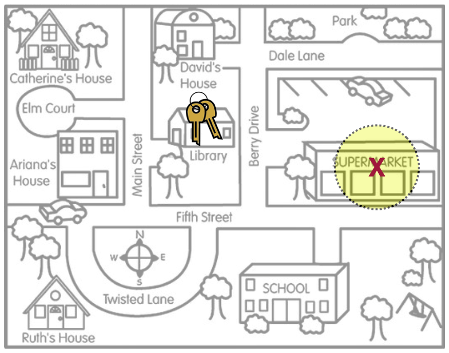
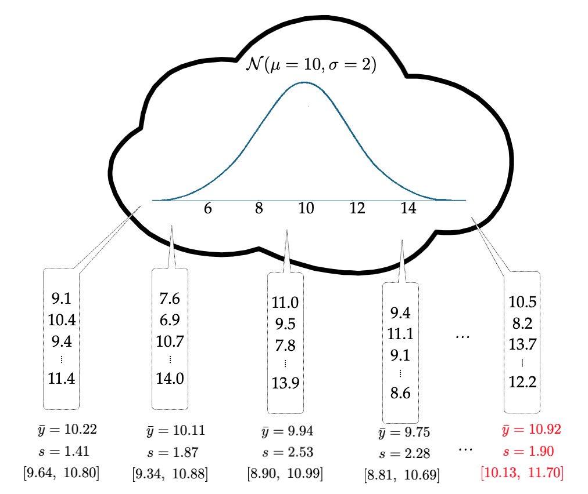
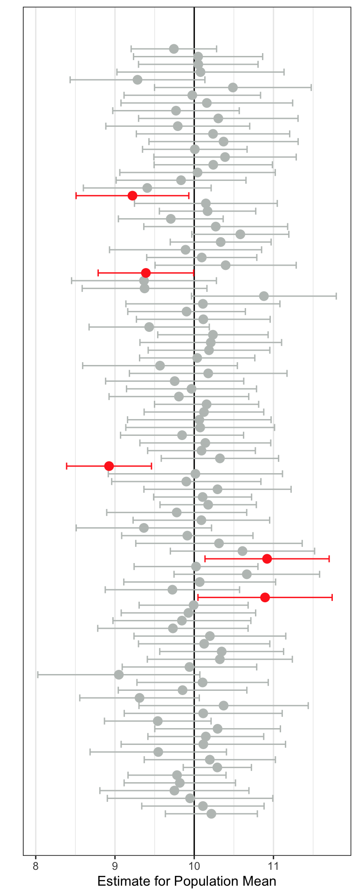
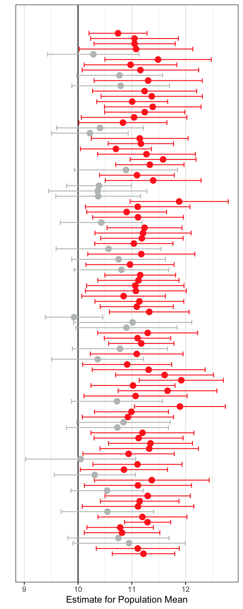
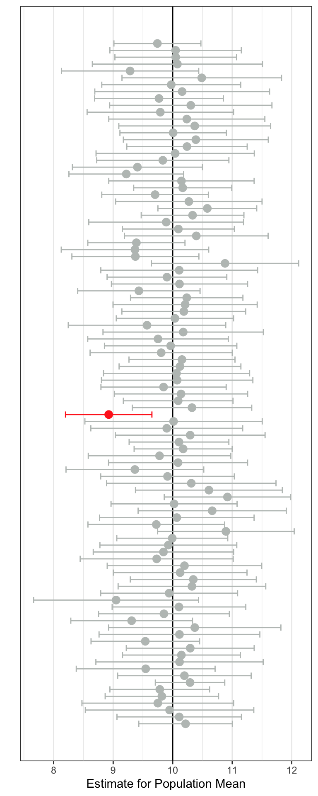
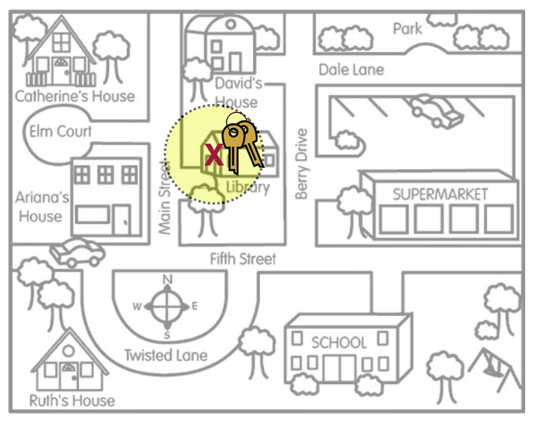
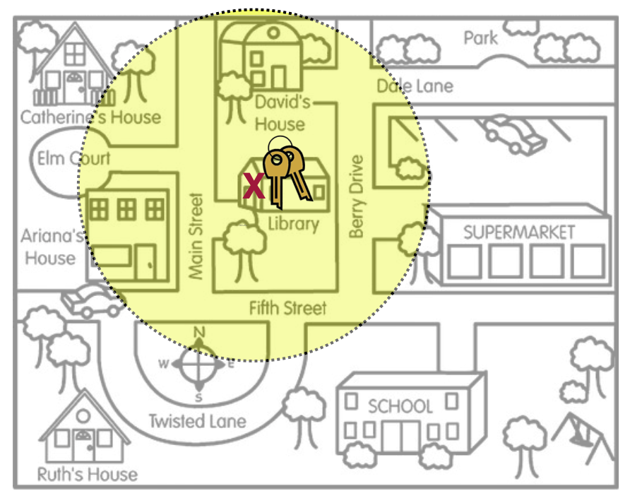

21 Confidence Intervals: Assumptions, Accuracy, and Precision
In this chapter you will learn about the assumptions that we need to make in order for the results of a confidence interval to be statistically valid. You will also learn about confidence levels and factors that affect the precision of a confidence interval.
21.1 Assumptions for the Confidence Interval
The assumptions underlying the use of a confidence interval are exactly the same as those underlying hypothesis tests. So, for using a CI to estimate a single mean, the assumptions are:
- The distribution of values in the population is normally distributed.
- The values in the population are independent from each other.
Whereas the assumptions underlying the use of a CI to estimate a single proportion are:
- The values in the population follow a binomial distribution. This is true so long as there are only two values the attribute can take on (e.g., “Yes” or “No”).
- The values in the population are independent from each other.
- The quantities \(n(\hat{p})\) and \(n(1-\hat{p})\) are both greater than 10, where n is the sample size and \(\hat{p}\) is the sample proportion value.
The assumptions for a CI to estimate the differences in means between two groups are:
- The distribution of values in both populations is normally distributed.
- The values in both population are independent from each other.
- Both populations have the same variance.
And, those for a CI to estimate the differences in proportions between two groups are:
- The values in the two populations both follow a binomial distribution. This is true so long as there are only two values the attribute can take on (e.g., “Yes” or “No”) for each group being compared.
- The values in the population are independent from each other.
- For both groups, the quantities \(n(\hat{p})\) and \(n(1-\hat{p})\) are both greater than 10, where n is the sample size used in the group and \(\hat{p}\) is the sample proportion value.
21.2 Unbiased Sampling and CIs
The key to generalization and accuracy in the CI is that the sample was chosen using an unbiased sampling method—namely random sampling. Without this, the resulting interval is biased and the interval given is far less likely to be accurate in estimating the population parameter. In the metaphor introduced in Chapter 17, a biased method would mean that Arthur’s search locations for their keys was systematically in the wrong place. If we extend this idea to confidence intervals, the search location (sample statistic) would produce a confidence interval (search area) that is also systematically in the wrong place. Figure 21.1 shows this idea visually.
In this picture the search area, which represents the estimate of where Arthur thought they lost their keys, is inaccurate—the actual keys (population parameter) are not inside the bounds of the search area (inside the CI). This is because the search location (sample statistic) was initially produced by a biased method.
For example, in Chapter 20 we computed a CI for the difference in the average amount of change in IQ scores between users who started using marijuana as adults and those who started using marijuana as teens. The CI, \([1.11,~11.27]\), indicated the difference in the average amount of change in IQ scores between people who became persistent marijuana users as adults than those that became persistent marijuana users as teens is between 1.11 and 11.26. Unfortunately the sample of users was not chosen randomly—they were all volunteers. Because our sample was not chosen using an unbiased sampling method, it is highly likely that the CI produced is inaccurate. That is, the true population difference in the average amount of change in IQ scores between people who became persistent marijuana users as adults than those that became persistent marijuana users as teens is PROBABLY NOT between 1.11 and 11.26.
21.2.1 Deeper Understanding of Unbiasedness and Accuracy
To more deeply understand how an unbiased method affects accuracy of the CI, let’s consider another thought experiment. Imagine a population that is normally distributed with a mean of 10 and a standard deviation of 2. Now imagine that we are randomly sampling 25 observations from that population and using those 25 sampled observations to produce a CI that would be used to estimate the value of the population mean. We will repeat this process, say 100 times. A visual of this thought experiment is shown in Figure 21.2.

A plot of the 100 CIs is shown in Figure 21.3. The population mean is shown as the vertical line at 10. Some of the CIs included the value of 10. For example, the first sample produced a CI of \([9.64,~10.80]\). It included 10 as a plausible value. This CI is the lowest CI on the plot. It is colored grey since it included the value of 10 as a plausible value. Similarly the second sample also included 10 as a plausible value, it’s CI was \([9.34,~10.88]\), so it is also colored grey (it is the second lowest CI in the plot). Some of the confidence intervals in Figure 21.3 are red. Those CIs do not include 10 as a plausible value.

Now let’s carry out a thought experiment in which a biased sampling method is used. In this sampling method, the sample mean is, on average, higher than the population mean of 10. We will use this method to again draw 100 different samples of size 25. And again, we will produce a CI for each of the 100 samples.

In Figure 21.4 the CIs that include the population value of 10 are again colored grey and those that do not are colored red. Using an biased sampling method, we see that more of the CIs are red—they do not include 10 as a plausible value for the population mean, despite 10 being the actual population mean!
In both Figure 21.3 and Figure 21.4 we can see that some of the CIs include 10 and some don’t. But, on average, the unbiased sampling method produces many more CIs that include 10 than the biased sampling method does. Because of this, we would say that the unbiased sampling method produces more accurate estimates of the sample mean. Accuracy refers to whether the CI includes the population parameter for most CIs that could be produced. It does not mean that any one CI will be accurate or not. It is just more likely that a CI will include the population parameter if the sample that produced the CI was selected using an unbiased method.
In practice we do not draw many samples—we have one sample. This sample is used to create a single CI that we use to estimate the mean. Unlike in the thought experiment, in practice, we do not know what the value of the population parameter actually is. So we don’t know whether our CI includes this value (is a gray CI) or doesn’t (is a red CI). If we used an unbiased sampling method to select our sample, our CI is more likely to be gray than red.
21.3 Confidence Level and Accuracy
In the previous section you saw that even if you use an unbiased sampling method (e.g., random sampling) you still occasionally draw a sample that produces a red CI—it does not include the population parameter as a plausible value. In fact, looking back at Figure 21.3, we see that this will happen about 5% of the time (five of the 100 samples produced a red CI). This is because we produced a confidence interval using a method that will include the population parameter for 95% of the intervals it creates, so long as the sampling method used to select those samples is unbiased. Another way to say this is the method we used to create the CIs was accurate 95% of the time.
This accuracy rate is referred to as the confidence level. In practice we say that we created a 95% Confidence Interval. But be careful, using this language. Here are some caveats as you start to use this terminology:
- The 95% doesn’t refer to the single CI, but rather to the accuracy rate across producing many, many CIs.
Across many different samples, we expect 95% of the CIs that are created to be grey and 5% to be red. In practice we never draw more than a single sample so there is ever only a single interval. This interval is either grey (it included the parameter in the interval) or red (it did not). Because of this, for a single sample we CANNOT SAY:
- There is a 95% chance that the population parameter is in the interval. (WRONG! 😢)
It either is in the interval (100%) or it’s not (0%). In practice, we hope that our interval is grey and includes the true population parameter inside the interval, but there is not way to know if it does. If we used an unbiased sampling method to select the sample, then we know that 95% of all possible samples we could draw would produce a grey interval, and we are hoping that our interval is from a sample that produces a grey interval. (Again, this is far more likely if the sample is chosen using an unbiased sampling method.)
21.3.1 Changing the Confidence Level
We can change the method we use to produce the CI to raise or lower the accuracy level. For example, rather than creating a 95% CI, we could use a method that is 99% accurate (99% of the samples will produce a grey CI). In order to do this, we change the multiplication factor in the formula for the CI. For example, the following was the formula we introduced to compute a CI, which produces a 95% CI:
\[ \text{Sample Estimate} \pm 2 \times \text{SE} \]
To create a 99% CI we use:
\[ \text{Sample Estimate} \pm 3 \times \text{SE} \]
And to produce a 68% CI we use:
\[ \text{Sample Estimate} \pm 1 \times \text{SE} \] The higher the confidence level, the larger the multiplication factor in the margin of error. Think about how this impacts the CI. For example, in our marijuana case study the 95% CI was \([1.11,~11.26]\). A 99% CI for this difference is \([-0.62,~13.00]\). The margin of error is bigger which makes the interval width wider. That is, we have more uncertainty (i.e., less precision) in our estimate.
To see how the accuracy changes when using a 99% CI (rather than a 95% CI) we can carry out a thought experiement. In this thought experiment (using an unbiased sampling method), we will draw 100 different samples of size 25 and produce a 99% CI for each of the 100 samples. The result is shown in Figure 21.5.

When we use a 99% CI only one of the 100 samples produced a CI that did not include the population mean of 10. Across the 100 sampes 99 of them (99%) included the population mean of 10. That implies that using a 99% CI is more accurate than using a 95% CI. Again note, that each individual interval either included the mean of 10 (was gray) or did not (was red)—the accuracy rate refers to how well the method does across many random samples.
The drawback to changing the accuracy level from 95% to 99% is that the intervals are wider. This, again, means that we have more uncertainty in the value of the population parameter because there are more plausible values in the interval. There is always a tradeoff between accuracy and precision; increasing one decreases the other. In practice, social science researchers tend to use and report 95% CIs.
21.3.2 Using R to Obtain a 99% CI
To change the confidence level for our CI, we need to include the argument conf.level= in the t_test() function. For example, to obtain a 99% CI for the difference in the average amount of change in IQ scores between users who started using marijuana as adults and those who started using marijuana as teens, we use the following syntax:
# Load libraries
library(ggformula)
library(mosaic)
library(tidyverse)
# Import data
cannabis <- read_csv("https://raw.githubusercontent.com/zief0002/epsy-5261/main/data/cannabis.csv")
# View data
cannabis# One-sample t-test
# Include conf.level=
my_t <- t.test(
iq_change ~ cannabis_dep,
data = cannabis,
var.equal = TRUE,
conf.level = .99
)
# Compute CI
confint(my_t)You can set the conf.level= argument to whichever confidence level you would like. The default is conf.level=.95, so not including the conf.level= argument will produce a 95% CI.
21.4 Improving Precision of the CI
Ideally, the confidence interval will be precise enough to be useful to the researcher. For example, say a researcher was interested in estimating the mean starting salary for a teacher in a particular state. If the CI they produced suggested the average starting salary was between $20,000 and $80,000, that would not be very useful. While it gives a set of plausible values, the precision of the interval is too low (too much uncertainty) to be useful in determining the average starting salary. On the other hand, a CI that estimated the average starting salary to be between $49,800 and $50,200 is quite useful. The high amount of precision in the estimate reduces the amount of uncertainty around the actual mean value.
The amount of precision in the CI is all governed by the margin of error. In our keys metaphor, the margin of error is represented by the size of the area that Arthur is searching.1 In Figure 21.6 and Figure 21.7, the two scenarios show vastly different search areas for Arthur’s keys. The left-hand figure has a smaller search area reflecting higher precision and less uncertainty about where the keys are. The right-hand figure has a larger search area which reflects lower precision and more uncertainty about where the keys are.


Numerically, the margin of error is half of the range of the confidence interval and is expressed as the part of the CI that gets added and subtracted from the sample estimate. For example the two CIs presented in the previous paragraph have a margin of error of $30,000 and $200, respectively. Their formulas to produce the CIs would be:
\[ \begin{split} 50000 &\pm 30000 = [20000,~80000]\\[2ex] 50000 &\pm 200 = [49800,~50200] \end{split} \]
Recall that the way we obtain the margin of error (when we are estimating the 95% CI for a single mean) is:
\[ \begin{split} \text{Margin of Error} &= 2 \times \text{SE} \\[2ex] &=2 \times \frac{\text{SD}}{\sqrt{n}} \\[2ex] \end{split} \]
where the value 2 was a multiplication factor related to the confidence level, SD is the sample standard deviation, and n is the sample size. To improve precision, we need to make the margin of error smaller (less uncertainty). How can we do this?
- Use a smaller multiplication factor than 2 (i.e., make the confidence level smaller)
- Have a smaller SD
- Have a larger sample size
In the social sciences, since we always use a 95% CI, the multiplication factor will be 2, so we can’t really manipulate this without sacrificing accuracy. The SD is a function of the data, so there is really no way to manipulate this either (at least not easily). The only factor we as researchers can change is the sample size, and sometimes we don’t have control over that either.
Larger sample sizes result in more precision (less uncertainty) in our estimates.
Thinking about this relationship between sample size and precision of the estimate prior to collecting any data can help you plan a more meaningful study. For example, say you wanted to be able to estimate the starting salary of teachers so that the margin of error was no more than $1,000 (a range of $2,000 in the CI). How big a sample size might you need? You could substitute the desired margin of error into our formula and solve for n.
\[ \begin{split} \text{Margin of Error} &= 2 \times \text{SE} \\[2ex] 1000 &=2 \times \frac{\text{SD}}{\sqrt{n}} \\[2ex] \end{split} \]
To solve for n, we also need an estimate for the SD we might expect in the data we collect. Often good guesses for this can be found in previous studies or the substantive literature. In our example, based on previous data, we expect that a reasonable guess for the SD might be about $10,000. Including this in our formula and solving for sample size:
\[ \begin{split} 1000 &=2 \times \frac{10000}{\sqrt{n}} \\[2ex] 500 &= \frac{10000}{\sqrt{n}} \\[2ex] 500(\sqrt{n}) &= 10000 \\[2ex] \sqrt{n} &= \frac{10000}{500} \\[2ex] \sqrt{n} &= 20 \\[2ex] n &= 20^2 \\[2ex] n &= 400 \end{split} \]
To obtain a 95% CI with a margin of error of $1,000, we need a sample of salaries from 400 starting teachers (assuming that the SD in the data is $10,000).
Obtaining a high degree of precision is often quite costly in terms of the sample size. You generally need a very large sample size to ensure high precision in a CI, which is not always possible in practice. This often means that estimates in the social sciences typically have a lot of uncertainty.
Technically it would be the radius of the search area.↩︎